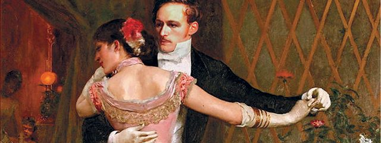
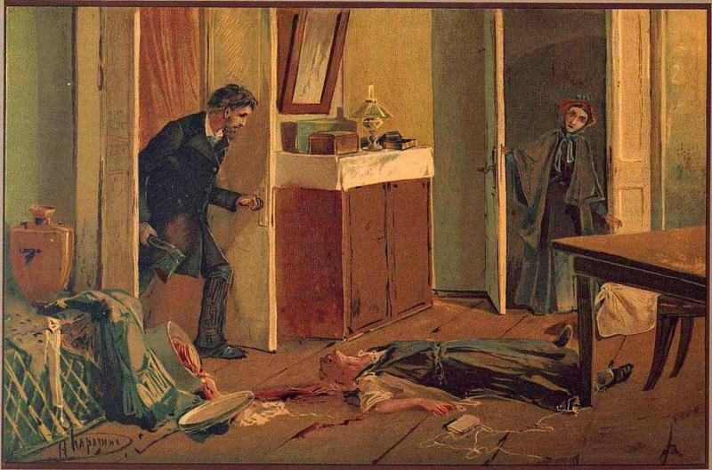
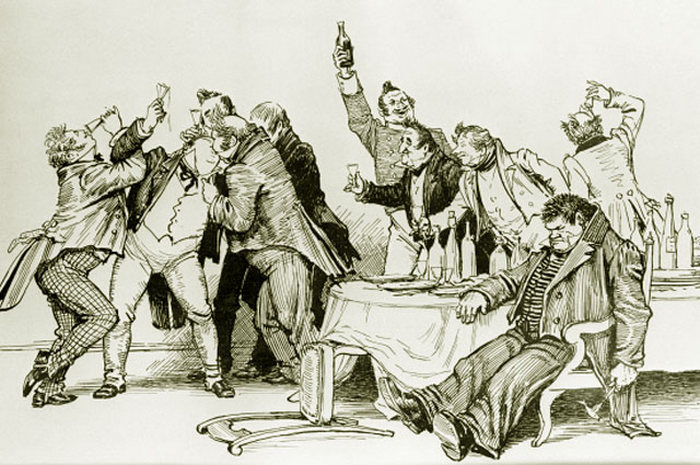

Л. Н. Толстой
1877 г.

Все счастливые семьи похожи друг на друга, каждая несчастливая семья несчастлива по-своему.
Все смешалось в доме Облонских. Жена узнала, что муж был в связи с бывшею в их доме француженкою-гувернанткой, и объявила мужу, что не может жить с ним в одном доме. Положение это продолжалось уже третий день и мучительно чувствовалось и самими супругами, и всеми членами семьи, и домочадцами. Все члены семьи и домочадцы чувствовали, что нет смысла в их сожительстве и что на каждом постоялом дворе случайно сошедшиеся люди более связаны между собой, чем они, члены семьи и домочадцы Облонских. Жена не выходила из своих комнат, мужа третий день не было дома. Дети бегали по всему дому, как потерянные; англичанка поссорилась с экономкой и написала записку приятельнице, прося приискать ей новое место; повар ушел еще вчера со двора, во время обеда; черная кухарка и кучер просили расчета.
Ф. М. Достоевский
1866 г.

В начале июля, в чрезвычайно жаркое время, под вечер, один молодой человек вышел из своей каморки, которую нанимал от жильцов в С—м переулке, на улицу и медленно, как бы в нерешимости, отправился к К—ну мосту.
Он благополучно избегнул встречи с своею хозяйкой на лестнице. Каморка его приходилась под самою кровлей высокого пятиэтажного дома и походила более на шкаф, чем на квартиру. Квартирная же хозяйка его, у которой он нанимал эту каморку с обедом и прислугой, помещалась одною лестницей ниже, в отдельной квартире, и каждый раз, при выходе на улицу, ему непременно надо было проходить мимо хозяйкиной кухни, почти всегда настежь отворенной на лестницу. И каждый раз молодой человек, проходя мимо, чувствовал какое-то болезненное и трусливое ощущение, которого стыдился и от которого морщился. Он был должен кругом хозяйке и боялся с нею встретиться.
Н. В. Гоголь
1842 г.

Кто бы ты ни был, мой читатель, на каком бы месте ни стоял, в каком бы звании ни находился, почтен ли ты высшим чином или человек простого сословия, но если тебя вразумил Бог грамоте и попалась уже тебе в руки моя книга, я прошу тебя помочь мне.
В книге, которая перед тобой, которую, вероятно, ты уже прочел в ее первом издании, изображен человек, взятый из нашего же государства. Ездит он по нашей Русской земле, встречается с людьми всяких сословий, от благородных до простых. Взят он больше затем, чтобы показать недостатки и пороки русского человека, а не его достоинства и добродетели, и все люди, которые окружают его, взяты также затем, чтобы показать наши слабости и недостатки; лучшие люди и характеры будут в других частях. В книге этой многое описано неверно, не так, как есть и как действительно происходит в Русской земле, потому что я не мог узнать всего: мало жизни человека на то, чтобы узнать одному и сотую часть того, что делается в нашей земле.